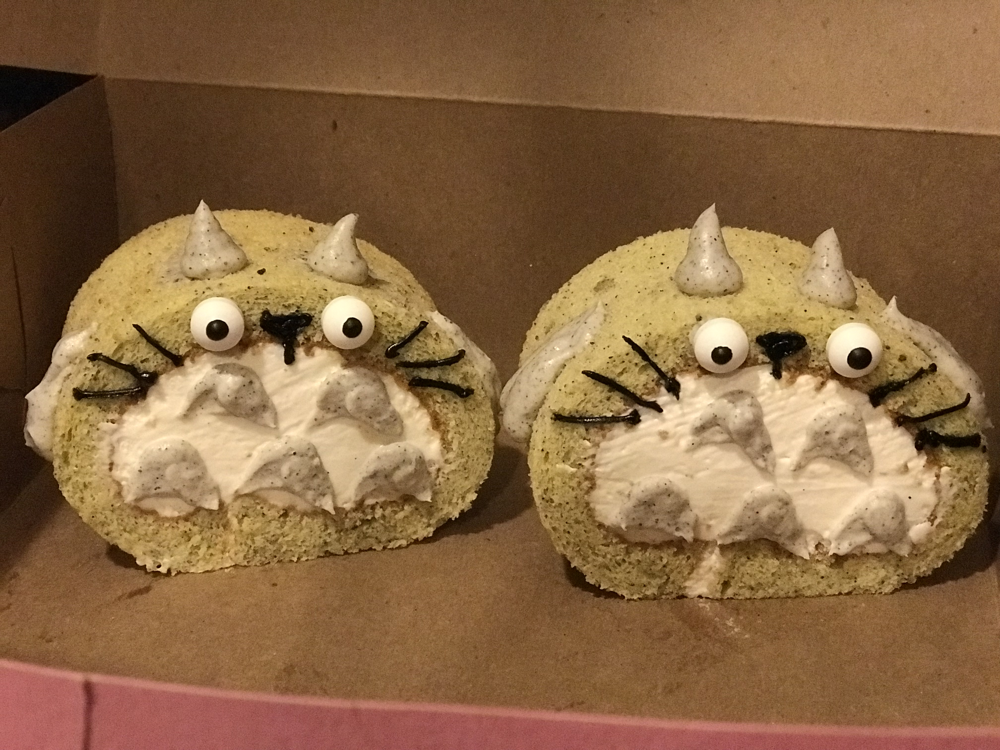

Swiss roll - Totoro

Swiss Roll Components
Assembling
- Unpeeled the parchment paper on top of the sesame sponge cake.
- Spread the filling(white chocolate whipping cream) on top of the sesame sponge cake.
- Gently roll up and tuck the cake into a circle.
- Cut the cake rolls into around 2 inches thick.
- Pipe the sesame cream decoration as totoro's hands, body marks, and ears.
- Paste the eyes, and pipe the melted dark chocolate as totoro's nose and whiskers.
- Serve cold.